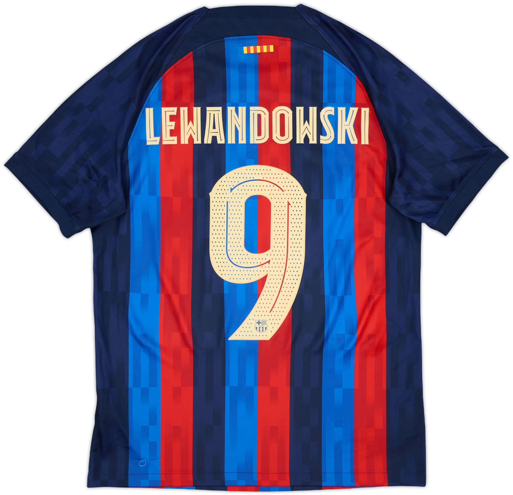
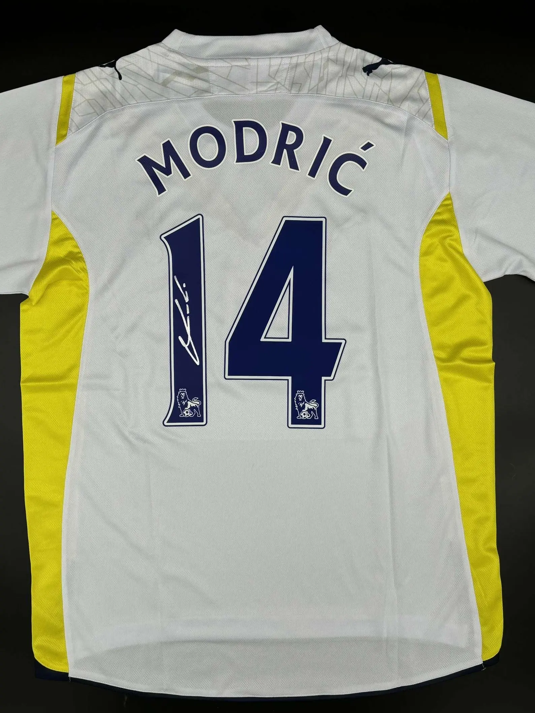

mreus11 · 09/27/26
2022-23 Barcelona Home Shirt Lewandowski
View jersey

diegoM10 · 09/27/26
1975 New York Cosmos Match Worn Jersey Pele
View jersey

sese_churu4 · 09/27/26
2009-2010 Tottenham Signed Home Shirt Luka Modrić
View jersey